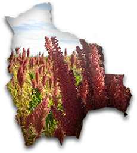

Terra Andina Bolivia es una agencia de viaje y de turismo receptivo instalada en Bolivia. Operamos circuitos, expediciones y trekkings en todo el territorio de Bolivia. También proponemos viajes combinados con Perú, Chile, Argentina, Brasil.
A lo largo de los años nos convertimos en un especialista reconocido tanto por los internautas como por los profesionales del turismo dentro los sectores del viaje individual a la carta, de los tours organizados en privado y de los viajes de incentivos.
Nos gusta considerarnos como vendedores de sueños, pero especialistas del viaje a medida es ciertamente lo que define mejor nuestra actividad.
Nuestro deseo es proponer el circuito más adaptado a cada uno así como prestaciones de calidad privilegiando lo mejor y la seguridad.
